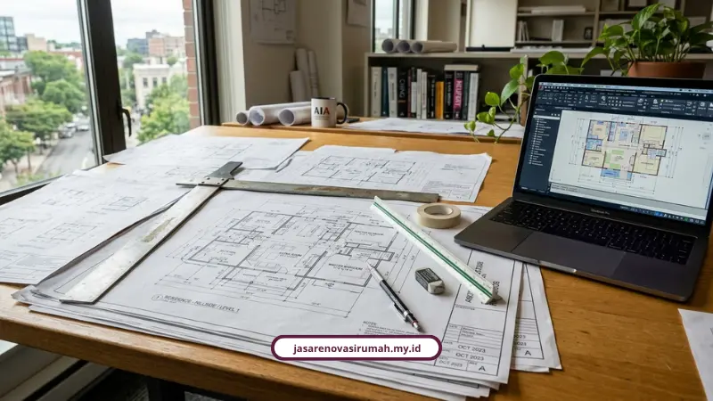

Proses kerja renovasi Surabaya yang kami terapkan berjalan lewat 5 tahapan terstruktur, mulai dari survei lokasi sampai serah terima dengan garansi resmi. Setiap tahap dirancang supaya anggaran dan jadwal tetap terkendali. Bagi Anda yang ingin melihat simulasi biaya, baca juga biaya renovasi rumah Surabaya dan cek layanan kontraktor rumah kami.
Kenapa Penting Tahu Alur Kerja Renovasi Sebelum Mulai Proyek?
Banyak pemilik rumah di Surabaya was-was soal dua hal: anggaran membengkak dan proses yang tidak transparan. Ditambah lagi kebingungan soal izin dari Pemkot Surabaya terkait Persetujuan Bangunan Gedung (PBG).
Belum lagi tantangan iklim tropis Surabaya yang bikin rumah gampang panas, dinding lembap, atau atap bocor kalau spesifikasi materialnya tidak tepat. Memahami alur kerja sejak awal membantu Anda tahu di tahap mana harus mengawasi lebih ketat.
Apa Saja 5 Tahapan Renovasi Rumah yang Kami Terapkan?
Setiap proyek renovasi yang kami tangani berjalan lewat 5 tahapan berikut:
- Konsultasi awal dan survei lokasi, untuk memahami kebutuhan ruang, gaya desain, kendala teknis seperti kebocoran atau jalur listrik/pipa, sekaligus potensi kebutuhan izin PBG.
- Perencanaan desain dan gambar kerja, mencakup penyusunan denah baru, layout, konsep arsitektur/interior, hingga gambar kerja teknis (CAD).
- Penyusunan RAB dan timeline kerja, menghitung rincian volume material, upah kerja, skema termin pembayaran, dan matriks jadwal pengerjaan.
- Pelaksanaan fisik dan pengawasan lapangan, mulai dari pembongkaran, pekerjaan sipil/struktur, instalasi MEP (mechanical, electrical, plumbing), finishing, sampai kontrol kualitas rutin.
- Pemeriksaan akhir (punch list), serah terima, dan garansi, yakni pengecekan checklist fungsi air/listrik/finishing, penandatanganan berita acara serah terima, serta masa garansi pengerjaan.
Kalau Anda penasaran kenapa sistem kerja ini bisa berjalan konsisten di 150+ proyek, kami sudah membahasnya di jasa kontraktor renovasi Surabaya dengan sistem desain dan pelaksanaan bergaransi. Untuk kebutuhan yang lebih luas, Anda juga bisa melihat layanan renovasi bangunan serta jasa arsitek rumah yang kami tawarkan.
Apa Aturan PBG yang Berlaku untuk Renovasi Rumah di Surabaya?
Renovasi yang mengubah bentuk, struktur, atau menambah luas bangunan wajib mengurus PBG sesuai Peraturan Walikota Surabaya Nomor 89 Tahun 2024. Berikut beberapa klasifikasi dan aturan teknisnya:
- Rumah tinggal sederhana adalah bangunan perorangan maksimal 2 lantai dan/atau luas maksimal 500 m2.
- Rumah tinggal tidak sederhana adalah bangunan lebih dari 2 lantai dan/atau luas lebih dari 500 m2.
- Tinggi pagar batas pekarangan di Garis Sempadan Pagar maksimal 1,5 meter di atas permukaan tanah dan harus tembus pandang.
- Tinggi lantai dasar bangunan maksimal 1,20 meter di atas rata-rata tanah pekarangan atau jalan, sebagai antisipasi banjir.
- Luas lantai mezzanine yang melebihi 50 persen dari luas lantai dasar dianggap sebagai lantai penuh.
- Penerbitan PBG dilakukan paling lama 1 hari kerja setelah pembayaran retribusi.
Berapa Acuan Harga Satuan Material Resmi di Surabaya untuk 2026?
Berdasarkan Keputusan Gubernur Jawa Timur Nomor 100.3.3.1/497/013/2025 tentang Standar Harga Satuan Barang TA 2026, berikut beberapa acuan harga material konstruksi di Kota Surabaya:
- Bata merah: Rp1.048.000 per m3.
- Bata ringan/hebel 60x20x10 cm: Rp11.000 per buah.
- Batu pecah/split 2/3: Rp469.000 per m3.
- Semen Portland 50 kg: Rp77.400 per zak.
- Pasir beton: Rp477.000 per m3.
- Besi beton polos 12mm x 12 meter: Rp124.000 per batang.
- Pipa PVC AW 3 inch x 4 meter: Rp107.000 per batang.
Acuan harga resmi ini kami pakai sebagai dasar penyusunan RAB yang transparan, supaya tidak ada selisih harga material yang mengambang.

Berapa Kisaran Biaya Renovasi Berdasarkan Skala Pekerjaan?
Sebagai gambaran umum, berikut kisaran biaya pasar renovasi di Surabaya tahun 2026:
- Renovasi ringan (pengecatan, perbaikan atap/plafon): Rp15 juta sampai Rp35 juta.
- Renovasi sedang (ganti lantai, ganti kusen, sekat ruang): Rp50 juta sampai Rp100 juta.
- Renovasi berat/total (perubahan struktur/tambah lantai): Rp2,5 juta sampai Rp4,5 juta per m2.
Selalu siapkan dana cadangan 10 sampai 20 persen dari total RAB untuk mengantisipasi kerusakan tersembunyi yang baru ketahuan saat bongkaran. Kalau ingin simulasi RAB yang lebih rinci per meter persegi, kami sudah menuliskannya di biaya renovasi rumah Surabaya per m2 2026. Jika Anda memerlukan bantuan desain lebih lengkap, Anda juga bisa menelusuri layanan desain interior kami.
Bagaimana Cara Kami Mengontrol Progres Proyek Supaya Tidak Molor?
Kami memantau progres proyek dengan mengintegrasikan Kurva S, Bar Chart, dan Earned Value Concept (EVC) untuk mengukur kesesuaian antara progres fisik di lapangan dengan anggaran yang sudah dikeluarkan.
Syayyidatur Rosyida, pakar dan penulis konstruksi diklat kerja, menjelaskan bahwa dalam pelaksanaan proyek konstruksi, jadwal pelaksanaan merupakan salah satu indikator keberhasilan.
Dengan jadwal perencanaan dan Kurva S, diperoleh gambaran jelas mengenai urutan kegiatan, hubungan ketergantungan antar-pekerjaan, serta alokasi sumber daya.
Apa Tren Desain Interior yang Diminati di Surabaya Sekarang?
Konsep minimalis modern masih mendominasi hunian Surabaya karena keterbatasan lahan, dengan perpaduan gaya yang terinspirasi dari interior kafe perkotaan.
Andi Baso Mappaturi, Wakil Ketua Himpunan Desainer Interior Indonesia (HDII) Jawa Timur, menyebut bahwa desain minimalis tetap bertahan, tapi tren saat ini lebih beragam, dan banyak orang terinspirasi dari kafe yang memiliki gaya interior unik dan berbeda.
Alfin Irsal, General Manager PT Debindo Global Expo, juga menyebut bahwa pameran seperti IndoBuildTech Surabaya bukan sekadar pameran, melainkan barometer perkembangan tren desain dan konstruksi di Indonesia, termasuk material bangunan yang lebih tahan cuaca.
Kesimpulan
Proses renovasi yang rapi bukan kebetulan, tapi hasil dari tahapan kerja yang jelas mulai dari survei sampai serah terima. Dengan mengikuti 5 tahapan ini, risiko anggaran membengkak dan proyek molor bisa ditekan jauh lebih kecil. Jika Anda ingin membandingkan pendekatan sebelum memulai, baca juga cara menyusun estimasi RAB renovasi rumah aman dan lihat layanan kontraktor bangunan yang sesuai kebutuhan proyek Anda.
Kalau Anda ingin merasakan proses kerja yang terstruktur seperti ini untuk rumah Anda di Surabaya, silakan hubungi kami via WhatsApp 0889-8964-3555 atau kunjungi halaman layanan kami di https://jasarenovasirumah.my.id/layanan/ untuk konsultasi dan survei lokasi gratis.
FAQ

Naura Regyna Putri
Penulis Profesional & Praktisi Konstruksi
Naura Regyna Putri adalah seorang penulis profesional yang memiliki ketertarikan mendalam pada dunia arsitektur dan konstruksi. Dengan pengalaman bertahun-tahun mengamati tren renovasi rumah, ia aktif membagikan panduan praktis, tips RAB, dan wawasan seputar material bangunan untuk membantu pemilik rumah mewujudkan hunian impian mereka dengan anggaran yang efisien.